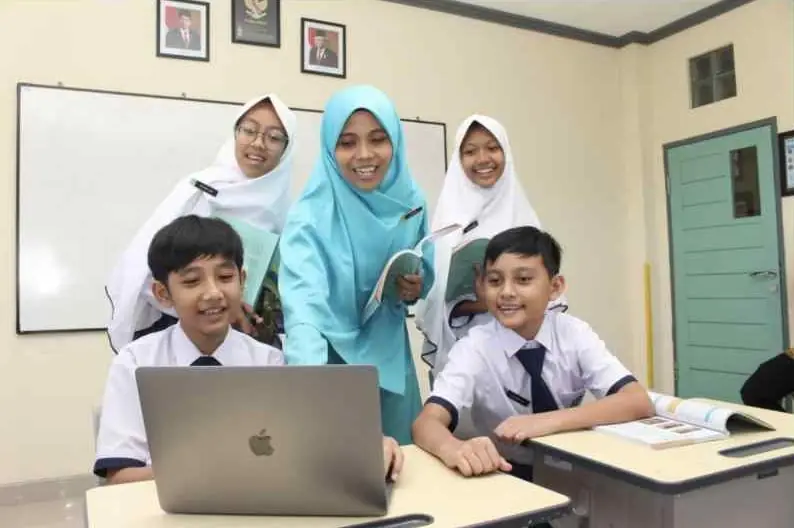
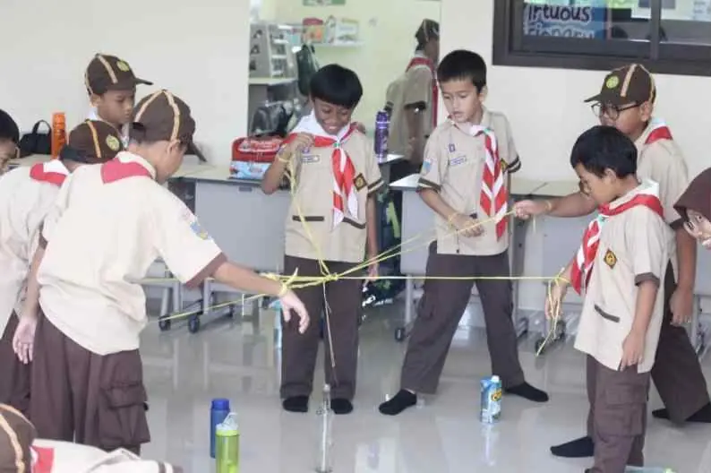

Programmes & Levels
Three levels on one campus, each blending the National Curriculum with Mutiara’s own B.E.S.T curriculum in a full day school system.
The B.E.S.T curriculum
Alongside the National Curriculum, which assesses knowledge, skills, attitude and behaviour, every level follows four directions.
Berkarakter · Character
Discipline, independence, integrity, love of country and leadership.
Edukatif · Educative
Quick learners with broad horizons, vision and curiosity.
Solutif · Solution-minded
Able to solve problems for themselves, others and their community.
Terampil · Skilled
Equipped with practical life skills.

Playgroup, Kindergarten A and B
Preschool (PAUD)
Young children learn through play, exploration and daily good habits, in Indonesian with English practised in everyday activities.
- Entry age
- Playgroup 3, Kindergarten A 4, Kindergarten B 5 (by July)
- Class
- Up to 25 children with 2 teachers
- Kindergarten hours
- Mon–Thu 07.45–13.00, Fri 07.45–11.00
- Playgroup hours
- Mon, Wed, Fri 08.00–11.00
- Entrepreneur: children sell items they bring from home on market days
- Explore Science: simple science presentations linked to the current theme
- Clubs: drawing, drum band, taekwondo, coding, Balinese dance
- Playgroup and kindergarten are both accredited

Grades 1–6
Primary School (SD)
Primary years build a strong academic base while nurturing creativity, collaboration, leadership and an entrepreneurial spirit.
- Entry age
- 6 years by July of the school year
- Class
- Up to 28 pupils with 2 teachers
- Hours
- Mon–Thu 07.30–15.00, Fri 07.30–11.00
- Love of country and active care for local culture
- English and technology as everyday tools
- Optional Qur’an memorisation (tahfidz) class
- Clubs: scouts, pencak silat, swimming, futsal, choir, music, drawing, traditional dance

Grades 7–9
Junior High School (SMP)
Teenagers learn actively and critically with varied methods and media, and are guided step by step towards independence and integrity.
- Class
- Up to 25 students
- Hours
- Mon–Thu 07.30–16.30, Fri 07.30–16.00
- Signature programmes: Best Leadership Program, Business Day, Super Camp, Outing Class
- Reading culture, academic writing and project-based Qur’an study
- Self-development activities and care for the environment
- Clubs: scouts, pencak silat, archery, journalism, futsal, basketball, robotics, photography & graphic design, videography, science club, music, cooking, choir



Qur’an memorisation (Tahfidz)
An alternative class for students who wish to memorise faster, taught with the Wafa method.
Preschool
Target: 1 juz
Primary
Target: 3 juz
Junior high
Target: 2 juz
School hours follow the school’s published information and may be adjusted each year. Please confirm the current timetable with our team.
Ready to join Mutiara School?
Message our team on WhatsApp for enrolment details, fees and school visits.
Enrol via WhatsApp